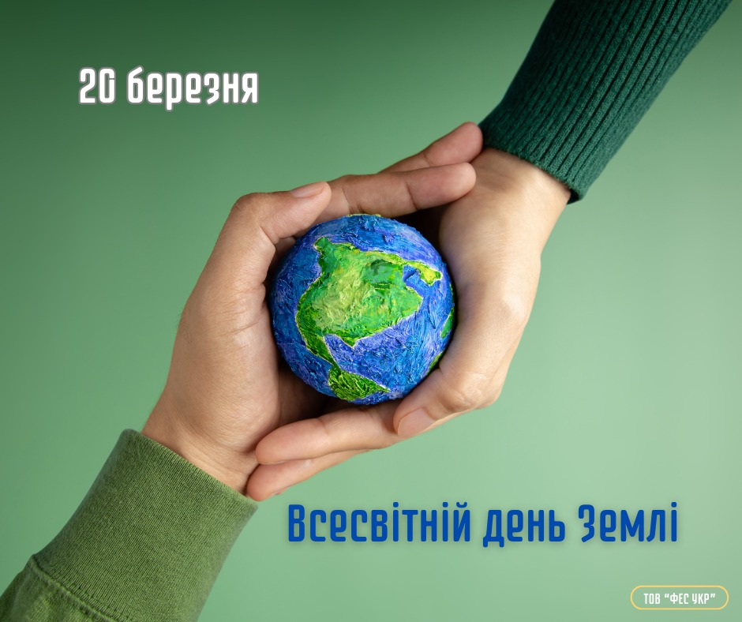
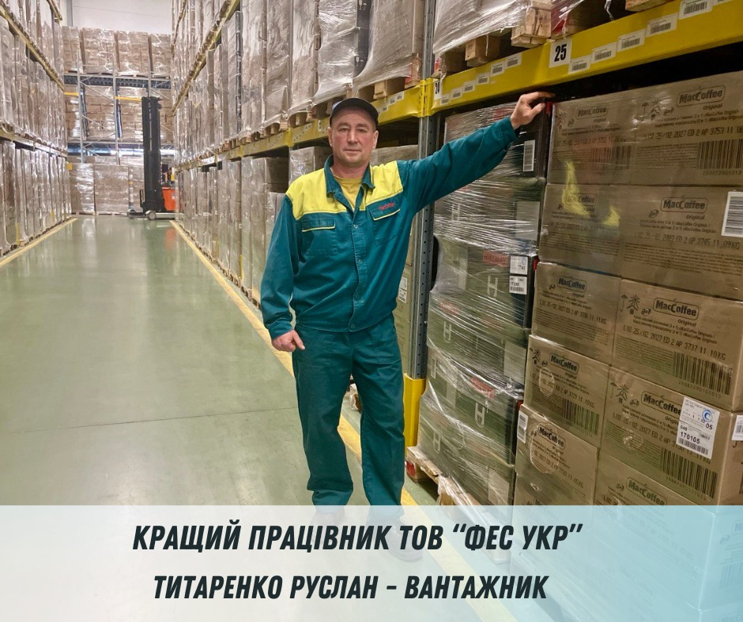

Ласкаво просимо до нашої спільноти
Новини від FES UKR
-
 25 березня 2025р.
25 березня 2025р.Ми розширили лінійку Hillway Exclusive!
Чудові новини для справжніх поціновувачів чаю! Ми розширили лінійку Hillway Exclusive!
Зустрічайте новинку – HW EXCLUSIVE Earl Grey з ароматом бергамота та цедрою апельсина у зручному форматі: розсипний чай (100 г) та у саше
-
 24 березня 2025р.
24 березня 2025р.Як приготувати капучино вдома: простий рецепт із секретами баристи!
Якщо ви обожнюєте ніжний, збалансований смак капучино з оксамитовою пінкою, спробуйте приготувати його вдома! Головне — правильні пропорції та кілька простих прийомів.
- Основа – якісне еспресо: воно має бути міцним та ароматним.
- Ідеальна пінка – пишна, але не надто повітряна, з гладкою текстурою...
-
 21 березня 2025р.
21 березня 2025р.Додай собі весняного настрою разом з улюбленими напоями:
1. Круті знижки на розчинну сублімовану каву та багато іншої продукції «MacCoffee» в магазині «Розетка»:
2. Величезний вибір чаю «Hillway» зі знижками та за програмою «Національний кешбек» теж можна знайти в магазині «Розетка»:
3. Хороші знижки на продукцію "MacCoffee" шукайте в мережі магазинів "Сільпо"...
-
 20 березня 2025р.
20 березня 2025р.Міжнародний день щастя
Сьогодні, 20 березня, весь світ відзначає Міжнародний день щастя - свято, запроваджене ООН у 2012 році, щоб нагадати: добробут і гармонія важливі для кожного.
У ТОВ "ФЕС УКР" ми не просто створюємо улюблену продукцію, а й дбаємо про щастя наших працівників - бо справжній смак натхнення народжується в атмосфері турботи та взаємопідтримки.
-
 25 березня 2025р.
25 березня 2025р.Знайомтесь ближче з тими, хто творить успіх ТОВ "ФЕС УКР"!
Якщо ви коли-небудь відкривали саше запашної кави "MacCoffee" або чаю "Hillway", знайте – за цим стоїть кропітка робота справжніх професіоналів.
Сьогодні ми знайомимо вас з Вікторія Макаренко – жінкою, яка протягом десяти років щодня докладає зусиль, щоб ваш улюблений напій був ідеально упакований...
-
25 березня 2025р.
20 березня — Всесвітній день Землі.
Що може бути кращим за чашку ароматної кави? Тільки та, що випита з турботою про Землю!
20 березня — Всесвітній день Землі.
Це нагадування, що наші звички впливають на майбутнє планети.
-
 17 березня 2025р.
17 березня 2025р.Чай з бергамотом та апельсиновою цедрою – цитрусова насолода у чашці!
Коли хочеться чогось ароматного та освіжаючого, ідеальним вибором стане чай з бергамотом та апельсиновою цедрою. Його тонкий цитрусовий аромат і насичений смак створюють справжню гармонію для вашого настрою!
- Бергамот додає чаю вишукану пікантну нотку та допомагає зняти втому.
- Апельсинова цедра надає приємну солодку свіжість та покращує настрій.
-
13 березня 2025р.
Знайомтесь ближче з тими, хто творить успіх ТОВ "ФЕС УКР"!
Щодня тисячі упаковок кави та чаю вирушають зі складу до поличок магазинів. Але перш ніж вони потраплять до покупців, за лаштунками працюють справжні професіонали своєї справи.
Один із них — Руслан Титаренко , вантажник складського господарства. Яким є його робочий день? Чи справді ця робота — лише про фізичну силу? Та як відпочити після зміни?